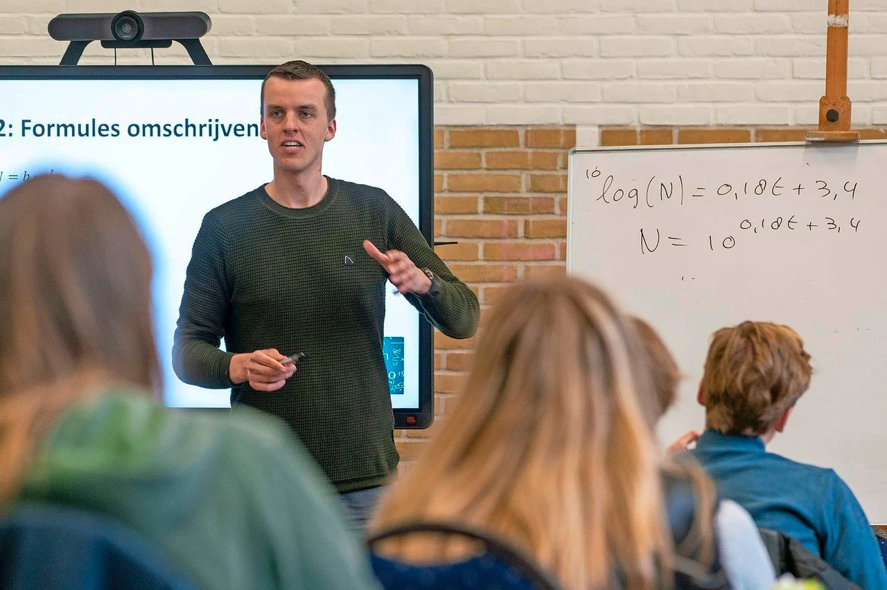

|
Om het schoolsysteem te digitaliseren, is doorgaans een breed scala aan hardware vereist. Dit kunnen computers en tablets zijn die leerlingen en docenten kunnen gebruiken, maar ook servers en netwerkapparatuur om gegevens op te slaan en te beheren. Bovendien kunnen scholen hardware zoals printers, scanners en andere apparaten gebruiken om hun activiteiten te ondersteunen. De specifieke hardware die wordt gebruikt, hangt af van de behoeften en het budget van het schoolsysteem, evenals van de specifieke taken die ze met de technologie willen uitvoeren. Over het algemeen is het doel van het digitaliseren van het schoolsysteem om de efficiëntie, samenwerking en toegang tot informatie voor studenten en docenten te verbeteren.
Laptops
Laptops zijn tegenwoordig niet meer weg te denken uit de schoolgangen. Het gebruik van laptops op school heeft verschillende voordelen. Enkele daarvan zijn:
- Betere leerresultaten: Onderzoek heeft aangetoond dat het gebruik van laptops de leerresultaten kan verbeteren, met name in vakken als wiskunde en wetenschap.
- Meer betrokkenheid en participatie: Laptops kunnen lessen interactiever en boeiender maken voor leerlingen, en hen aanmoedigen meer deel te nemen aan discussies en activiteiten in de klas.
- Meer samenwerking: Laptops kunnen worden gebruikt om de samenwerking tussen leerlingen te vergemakkelijken, zodat ze in realtime kunnen samenwerken aan projecten en opdrachten
- Toegang tot een breder scala aan leermiddelen: Laptops geven leerlingen toegang tot een breed scala aan digitale onderwijsbronnen, zoals video's, afbeeldingen en presentaties, wat de leerervaring kan verrijken en diversifiëren.
- Gemakkelijk te gebruiken en te integreren in bestaande lesplannen: Laptops zijn gemakkelijk te gebruiken en kunnen gemakkelijk worden geïntegreerd in bestaande lesplannen, waardoor leerkrachten technologie in hun lessen kunnen integreren zonder uitgebreide training of voorbereiding.
- Meer flexibiliteit: Met laptops kunnen studenten overal toegang krijgen tot en werken aan lesmateriaal en opdrachten, wat zorgt voor meer flexibiliteit en gemak.
- Verbeterde communicatie en netwerken: Laptops kunnen worden gebruikt om communicatie en netwerken tussen leerlingen, leraren en ouders te vergemakkelijken, waardoor betere samenwerking en coördinatie mogelijk wordt.
|

Digiboards
Ook digiboards zijn te vinden in bijna elke school Het gebruik van een digiboard in een schoolomgeving heeft verschillende voordelen. Enkele daarvan zijn:
- Meer betrokkenheid: digiboards kunnen lessen interactiever en boeiender maken voor studenten, omdat ze gemakkelijk afbeeldingen, video's en andere multimedia-inhoud kunnen manipuleren.
- Verbeterde samenwerking: digiboards maken real-time samenwerking en annotatie mogelijk, waardoor het voor studenten gemakkelijker wordt om samen te werken aan projecten en opdrachten.
- Verbeterde toegankelijkheid: digiboards kunnen tekst, afbeeldingen en video's in een groter formaat weergeven, waardoor het voor leerlingen met een visuele beperking gemakkelijker wordt om de inhoud te zien.
- Verbeterde organisatie: digiboards kunnen worden gebruikt om lesroosters, opdrachten en andere belangrijke informatie in een duidelijk en gemakkelijk leesbaar formaat te ordenen en weer te geven.
- Verhoogde efficiëntie: digiboards kunnen worden gebruikt om informatie op een efficiëntere manier te presenteren en weer te geven dan traditionele whiteboards of schoolborden.
- Kostenbesparend: digiboards kunnen kosteneffectief zijn omdat ze kunnen worden gebruikt om verschillende soorten inhoud en presentaties weer te geven, waardoor er minder behoefte is aan andere materialen zoals transparanten, flip-overs en stiften.
- Gemakkelijker op te slaan en te delen: met digiboards kunnen docenten hun lesmateriaal en presentaties opslaan en delen met leerlingen, wat handig kan zijn voor leerlingen die een les missen of voor beoordelingsdoeleinden.
|